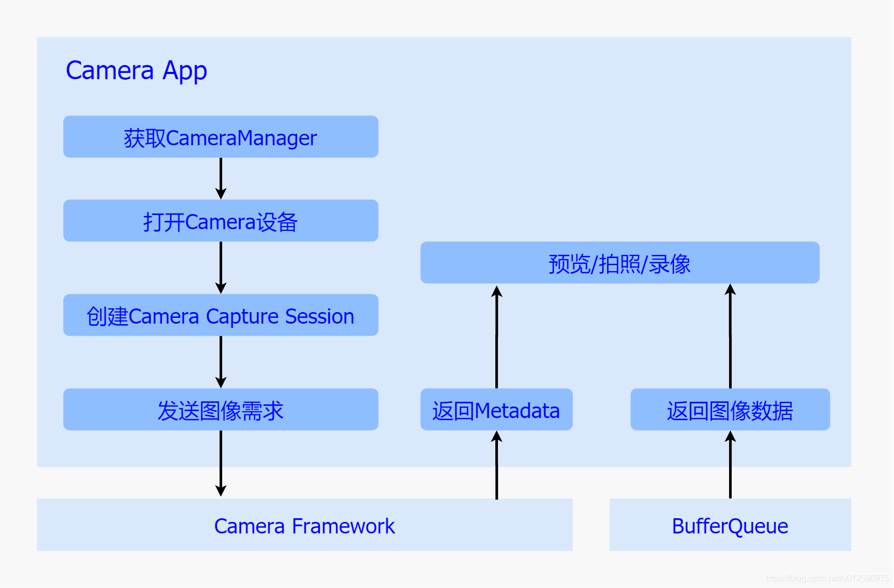
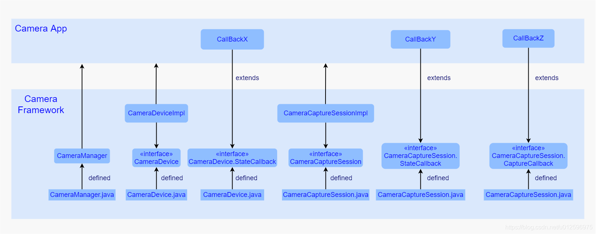
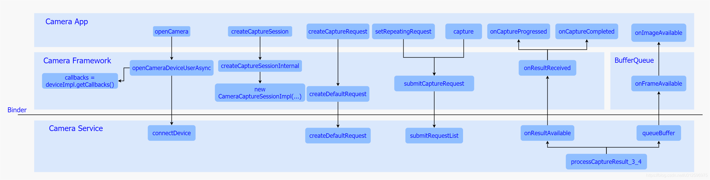

深入理解Android相机体系结构之三：相机应用层
一、概览
相机应用处于整个框架的上层，在现实生活中，为了满足各式各样的应用场景，会加入很多业务处理逻辑，但是一旦当我们拨开繁杂的业务逻辑，便会发现其核心部分依然是通过调用谷歌制订的一系列Camera Api接口来完成的，而所有的相机行为都包含在该接口中。
起初，相机系统采用的是Camera Api v1接口，它通过一个Camera 类以及该类中的几个标准方法来实现整个相机系统的预览、拍照以及录像功能，控制逻辑比较简单，同时也比较容易理解，但也正是这种简单，导致了它无法逐帧控制底层硬件，无法通过元数据进行修改进而增强帧的表达能力，再加之应用场景的多样化趋势，该接口在新功能的实现上显得些许力不从心。面对该接口难以进一步扩展相机功能这一局面，谷歌在Andorid 5.0(API Level 21)便重新对Camera进行了设计，摒弃了Camera Api v1的设计逻辑，提出了一个全新的API – camera2，引入了Session以及Request概念，将控制逻辑统一成一个视图，因此在使用上更加复杂，同时也支持了更多特性，比如逐帧控制曝光、感光度以及支持Raw格式的输出等。并且由于对控制逻辑的高度抽象化，使得该接口具有很高的灵活性，可以通过简单的操作实现30fps的全高清连拍的功能，总得来说，该接口极大地提高了对于相机框架的控制能力，同时也进一步大幅度提升了其整体性能。
谷歌提出Camera Api v2接口的同时，将其具体实现放入了Camera Framework中来完成，Framework内部负责解析来自App的请求，并且通过AIDL跨进程接口下发到Camera Service中进行处理，并且等待结果的回传。接下来我们首先以Camera Api v2接口为主简单讲解下其逻辑含义，然后详细梳理下Camera Framework对于它的实现，最后以一个简单App Demo为例，来介绍下如何使用该接口来控制整个相机体系。

二、Camera Api v2
在介绍Camera Api v2之前，首先我们来回顾下Api v1接口的基本逻辑，该接口主要通过一个Camera.java类来定义了所有的控制行为，通过定义诸如open、startPreview、takePicture、AutoFocus等标准的接口来实现打开设备、预览、拍照以及对焦操作的功能，同时通过定义Camera.Parameters来实现了参数的读取与设置，其中包括了帧率、图片格式的控制，另外，通过定义了Camera.CameraInfo来实现了图像元数据的获取。而为了更加细致化地控制相机系统的Camera Api v2接口，相对于Api v1接口而言，复杂了许多，通过不同的接口类以及接口方法定义了复杂的相机系统行为，接下来我们来逐一进行介绍：
CameraManager
谷歌将CameraManager定义为一个系统服务，通过Context.getSystemService来获取，主要用于检测以及打开系统相机，其中打开操作通过openCamera方法来完成。除此之外，还定义了getCameraCharacteristics方法来获取当前Camera 设备支持的属性信息，而该属性信息通过CameraCharacteristics来表示，其中包括了图像数据的大小以及帧率等信息。
CameraDevice
代表了一个被打开的系统相机，类似于Camera Api v1中的Camera类，用于创建CameraCaptureSession以及对于最后相机资源的释放。
CameraDevice.StateCallback
该类定义了一系列的回调方法，其实现交由App来完成，主要用于返回创建Camera设备的结果，一旦创建成功相机框架会通过回调其onOpened方法将CameraDevice实例给到App，如果失败，则调用onError返回错误信息。
CameraCaptureSession
该类代表了一个具体的相机会话，建立了与Camera设备的通道，而之后对于Camera 设备的控制都是通过该通道来完成的。当需要进行预览或者拍照时，首先通过该类创建一个Session，并且调用其startRepeatingRequest方法开启预览流程，或者调用capture方法开始一次拍照动作。
CameraCaptureSession.StateCallback
该接口类定义了一系列回调方法，其实现交由App完成，主要用于返回创建CameraCaptureSession的结果，成功则通过onConfigured方法返回一个CameraCaptureSession实例，如果失败则通过onConfigureFailed返回错误信息。
CameraCaptureSession.CaptureCallback
该接口类定义了一系列回调方法，用于返回来自Camera Framework的数据和事件，其中onCaptureStarted方法在下发图像需求之后立即被调用，告知App此次图像需求已经收到，onCaptureProgressed方法在产生partial meta data的时候回调，onCaptureCompleted方法在图像采集完成，上传meta data数据时被调用。
CaptureRequest
该类用于表示一次图像请求，在需要进行预览或者拍照时，都需要创建一个CaptureRequest，并且将针对图片的一系列诸如曝光/对焦设置参数都加入到该Request中，通过CameraCaptureSessin下发到相机系统中。
TotalCaptureResult
每当通过CameraDevice完成了一次CaptureRequest之后会生成一个TotalCaptureResult对象，该对象包含了此次抓取动作所产生的所有信息，其中包括关于硬件模块(包括Sensor/lens/flash)的配置信息以及相机设备的状态信息等。
CaptureResult
该类代表了某次抓取动作最终生成的图像信息，其中包括了此次关于硬件软件的配置信息以及输出的图像数据，以及显示了当前Camera设备的状态的元数据(meta data)，该类并不保证拥有所有的图像信息。
三、Camera Framework
基于接口与实现相分离的基本设计原则，谷歌通过Camera Api 接口的定义，搭建起了App与相机系统的桥梁，而具体实现便是由Camera Framework来负责完成的。在采用Camera Api v1接口的时期，该部分是通过JNI层来进行java到C++的转换，进而到达native层，而在native层会通过实现CameraClient建立与Camera Service的通讯 ，整个过程比较繁琐，使得整体框架略显繁杂，而随着Camera Api v2的提出，在该层便大量使用AIDL机制，直接在Java层建立与Camera Service的通信，进一步简化了整体框架。，接下来我们以几个主要接口为主线，简单梳理下其具体实现。

CameraManager
实现主要在CameraManager.java中，通过CameraManager查询、获取以及打开一个Camera 设备。在该类中还实现了内部类CameraManagerGlobal，该类继承于ICameraServiceListener.Stub，在打开相机设备的时候，在内部会获取到ICameraService远程代理，并且调用ICameraService的addListener方法将自己注册到Camera Service中，一旦Camera Service状态有所变更便会通过其实现的回调方法通知到Camera Manager服务，另外，该类还通过调用ICameraService.connectDevice()方法获取到Camera Service中的CameraDevice远程代理，并且将该代理传入CameraDeviceImpl中，进而与Camera Service建立了连接。
CameraDeviceImpl
该类定义在CameraDeviceImpl.java文件中，继承并实现了CameraDevice接口，代表了一个相机设备，可以完成CameraCaptureSession的创建以及CaptureRequest创建等工作，内部定义了CameraDeviceCallbacks类(该类继承于ICameraDeviceCallbacks.Stub，对应于Camera Service中的 ICameraDeviceCallbacks接口)，用于接收来自Camera Service中的Camera Device的状态回调，并且内部维护着一个Camera Service 的远程ICameraDevice代理，进而可以下发图像请求到Camera Service中。
CameraCaptureSessionImpl
该类定义在CameraCaptureSessionImpl.java文件中，继承并实现了CameraCaptureSession接口，每一个相机设备在一个时间段中，只能创建并存在一个CameraCaptureSession，其中该类包含了两种Session，一种是普通的，适用于一般情况下的会话操作，另一种是用于Reprocess流程的会话操作，该流程主要用于对于现有的图像数据进行再处理的操作。该类维护着来自实例化时传入的Surface列表，这些Surface正是包含了每一个图像请求的数据缓冲区。
除了以上这几个接口，还有几个接口是需要App部分进行实现的，用于返回App所需要的对象或者数据：
CameraDevice.StateCallback
被App端进行继承并实现，用于在调用CameraManager的openCamera方法时，通过参数的形式传入Framework，在Framework中，一旦CameraDeviceImpl创建成功便通过其中的onOpened方法将其返回给App，如果失败，便会通过其他方法返回给App错误信息。
CameraCaptureSession.StateCallback
被App端进行继承并实现，用于在调用CameraDevice的createCaptureSession方法时作为参数传入Framework中，一旦创建成功，Framework便会通过调用该类的onConfigured接口返回一个CameraCaptureSessionImpl的对象，如果失败，Framework会调用其onConfigureFailed方法将错误信息返回至App。
CameraCaptureSession.CaptureCallback
被App端进行继承并实现，App通过调用CameraCaptureSessionImpl的setReaptingRequest或者capture方法是作为参数传入Framework，一旦Framework接收到来自CameraService的数据时，便会通过调用这个回调类将数据发送至App中。
主要接口流程

Camera Framework 中针对几个接口的调用流程如上图，接下来我们依次进行分析：
a) openCamera
当用户打开相机应用时，会去调用该方法打开一个相机设备，其中该方法最终经过层层调用会调用到Camera Framework中的openCameraDeviceUserAsync方法，在该方法中主要做了三件事：
- 首先是获取ICameraService代理，调用其getCameraInfo方法获取当前设备的属性。
- 其次是实例化了一个CameraDeviceImpl对象，并将来自App的CameraDevice.StateCallback接口存入该对象中，再将CameraDeviceImpl中的内部类CameraDeviceCallback作为参数通过ICameraService的connectDevice方法传入Camera Service去打开并获取一个ICameraDeviceUser代理，并将该代理存入CameraDeviceImpl中进行管理。
- 最后通过App传入的回调将CameraDeviceImpl返回给App使用，至此整个流程便完成了。
b) createCaptureSession
在打开相机设备之后便需要去创建一个相机会话，用于传输图像请求，其最终实现是调用该方法来进行实现的，而该方法会去调用到Camera Framework中的createCaptureSessionInternal方法，该方法主要做了两件事：
- 首先调用configureStreamsChecked方法来配置数据流。
- 其次实例化了一个CameraCaptureImpl对象，并通过传入CameraCaptureSession.StateCallback回调类将该对象发送至至App中。
而在configureStreamsChecked方法中会去调用ICameraDeviceUser代理的一些列方法进行数据流配置，其中调用cancelRequest方法停掉当前的的预览流程，调用deleteStream方法删除之前的数据流，调用createStream创建新的数据流，最后调用endConfigure来进行数据流的配置工作，针对的配置便在最后这个endConfigure方法中。
c) createCaptureRequest
在创建并获取相机会话之后，便可以开始下发图像请求了，而在此之前，需要通过该方法来创建一个CaptureRequest，一旦调用该方法，最终会调用到Camera Service中ICameraDeviceUser的createDefaultRequest方法来创建一个默认配置的CameraMetadataNative，其次实例化一个CaptureRequest.Builder对象，并将刚才获取的CameraMetadataNative传入其中，之后返回该CaptureRequest.Builder对象，在App中，直接通过调用该Buidler对象的build方法，获取一个CaptureRequest对象。
CaptureRequest对象也创建成功了，接下来需要下发图像请求了，一般常用请求分为两种,一个是预览一个是拍照。
d) setRepeatingRequest
App调用该方法开始预览流程，通过层层调用最终会调用到Framework中的submitCaptureRequest方法，该方法主要做了两件事：
- 首先调用CameraService层CameraDeviceUser的submitRequestList方法，将此次Request下发到CameraService中。
- 其次将App通过参数传入的CameraCaptureSession.CaptureCallbakc对象存到CameraDeviceImpI对象中。
接下来看下拍照请求的处理流程：
e) capture
该方法最终也会调用到Framework中的submitCaptureRequest方法，接下来边和预览流程大致相同，会去调用Camera Service 中的ICameraDeviceUser的submitRequestList方法传入请求，之后将App实现的回调对象存入CameraDeviceImpl对象中。
f) onCaptureProgressed
一旦Request下发到Camera Service之后，当底层生成了Partial Meta data数据，Camera Service会调用通过调用在打开相机设备时传入的ICameraDeviceCallback代理，通过其onResultReceived方法将数据传回Framework，之后调用App传入的CameraCaptureSession.CaptureCallback中的onCaputreProgressed方法将结果回传至App进行解析以及后处理。
g) onCaptureCompleted
一旦Request下发到Camera Service之后，当底层生成了Meta data数据，Camera Service会调用通过调用在打开相机设备时传入的ICameraDeviceCallback代理，通过其onResultReceived方法将数据传回Framework，之后调用App传入的CameraCaptureSession.CaptureCallback中的onCaputreCompleted方法将结果回传至App进行解析以及后处理。
h) onImageAvailable
之前已经通过两个回调接口onCaptureProgressed以及onCaptureCompleted方法将meta data上传到了App，一般情况下，图像数据会在他们之后上传，而且这个上传过程并不经过Camera Framework，而是通过BufferQueue来进行的，当Camera Service接收到底层传来的图像数据，便会立即调用processCaptureResult_3_4方法，该方法中会去调用BufferQueue中生产者角色的Surface的queueBuffer方法，将数据入队并通知消费者去消费，而此时的消费者正是App端的ImageReader，并经过一层层回调，最终会通过调用ImageReader的onImageAvailable方法，通知ImageReader去将数据取出，并做后期操作。
从上面的梳理不难发现，整个Camera Framework除了是对Camera Api v2的实现外，还承担着与Camera Service跨进程通信的任务，充当了一个位于App与Service之间的中转站的角色。
四、Camera App Demo
经过上面的梳理总结，我们已经对整个Camera Api v2接口以及实现都有了一个较为深入的认识，但是认识暂时仅仅停留在代码层面，为了更好理解其功能，接下来我们以一个简单的相机应用入手来加深下对其的应用流程的理解：
该相机Demo比较简单，界面有两个元素，一个是用于预览显示的TextureView，以及一个用于拍照的按钮，整个代码就采用了一个MainActiviy，相机操作就在该类中进行，其主要代码如下：
1 | package com.bruce.camerademo1; |
代码比较简单，其主要逻辑如下：
a) 初始化
随着应用的打开，首先在MainActivity的onResume方法中去初始化用于拍照的按钮和接收数据的ImageReader，并且设置其各自回调方法。b) 获取CameraManager/打开Camera 设备
其次在TextureView.SurfaceTextureListener中的回调方法onSurfaceTextureAvailable会被调用，在该方法中会去获取CameraManager服务，并打调用其openCamera方法打开后主摄相机设备，并通过回调接口获取该设备，紧接着调用startPreview方法。c) 创建Camera Capture Session/下发预览需求
在startPreview方法中会去下发预览需求，主要工作有设置TextureView缓冲区大小，创建用于接收预览数据的Surface，并调用CameraDevice的createCaptureSession方法创建CameraCaptureSession，在其回调接口onConfigured方法中，去创建CaptureRequest，并调用CameraCaptureSession的setRepeatingRequest方法下发Request到相机框架中。d) 返回预览Metadata/图像数据
在完成了预览需求的Requet的下发工作后，相机框架便会不断通过传入的CaptureCallback中的onCaptureComplete方法上传Meta Data以及通过BufferQueue框架上传图像数据进行预览显示。e) 下发拍照需求
当点击应用界面的拍照按钮的时候，会触发按钮的View.OnClickListener监听类中的onClick方法，在该方法中，初始化了一个用于拍照的CaptureRequest，并且通过调用CameraCaptureSession的capture方法下发拍照需求.f) 返回拍照Metadata/图像数据
一旦拍照图像数据生成，便会通过回调接口CaptureCallback中的onCaptureComplete方法上传Meta Data以及通过BufferQueue框架上传图像数据到ImageReader中，触发其onImageAvailable方法，在该方法中通过ImageReader的acquireNextImage获取到拍照图像数据，并通过doByte2JpegFile将其转存外JPEG格式的图片保存在设备中。
Camera App作为整个框架体系的最上层，直接面向的主体是普通用户，其关键性不言而喻，一点点的卡顿或者停滞都会降低用户体验性，为了保证整个框架的稳定性以及高效性，谷歌重新设计了Camera 接口Api v2，由于该接口将控制逻辑高度抽象成了一个控制视图，所以可以逐帧控制硬件参数，进而实现一系列强大的功能，比如可以直接在预览过程中，手动控制曝光、感光度、对焦以及白平衡的参数，动态地输出不同效果的图像，又比如可以利用该接口与HDR算法相配合，实现高动态成像效果。而其中，对于Api v2接口的实现是在Camera Framework中完成的，由上面分析可以看出，其内部并没有采用十分复杂的控制逻辑，整套代码流程清晰明朗，而这样的设计，进一步保证了该层的稳定性以及高效性，为整个相机框架体系的稳定奠定了坚实的基础。